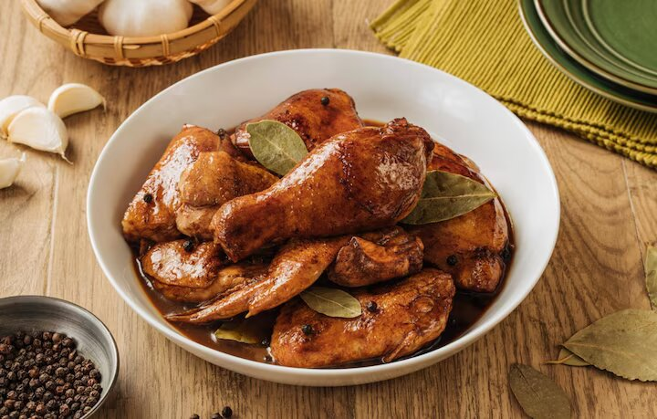

How to Cook Adobo
Ingredients
- 2 tbsp canola oil
- 6 cloves garlic crushed
- 1 pc onion, sliced
- 1 kilogram chicken cut ups
- 1/4 cup soy sauce
- 1 cup water
- 2 pcs bay leaves
- 1 tsp whole black peppercorns, slightly crushed
- 2 pc Knorr chicken cubes
- 1 tsp brown sugar packed
- Option: 1 cup kale or spinach
Cook
- Heat oil in pan and sauté garlic and onions. Then add chicken to the pan and sear on all sides, until you have a little browning in the chicken skin.
- Pour in vinegar, soy sauce and water. Add bay leaves, pepper and Knorr Chicken Cubes. Bring to a boil over high heat then reduce heat to simmer, but do not cover the pan. Continue to simmer for 10 mins.
- Remove chicken pieces from sauce and fry in another pan until nicely browned.
- Put back fried chicken pieces into sauce. Add sugar and let simmer again for another 10 minutes or until sauce has thickened. Serve warm.

Find the recipe with Knorr